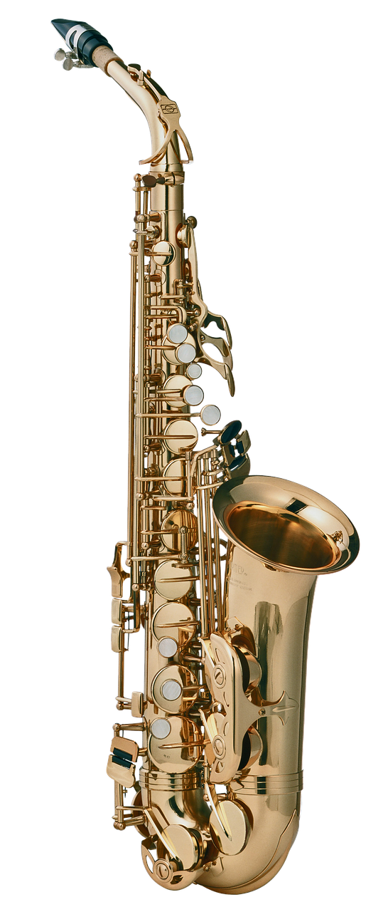
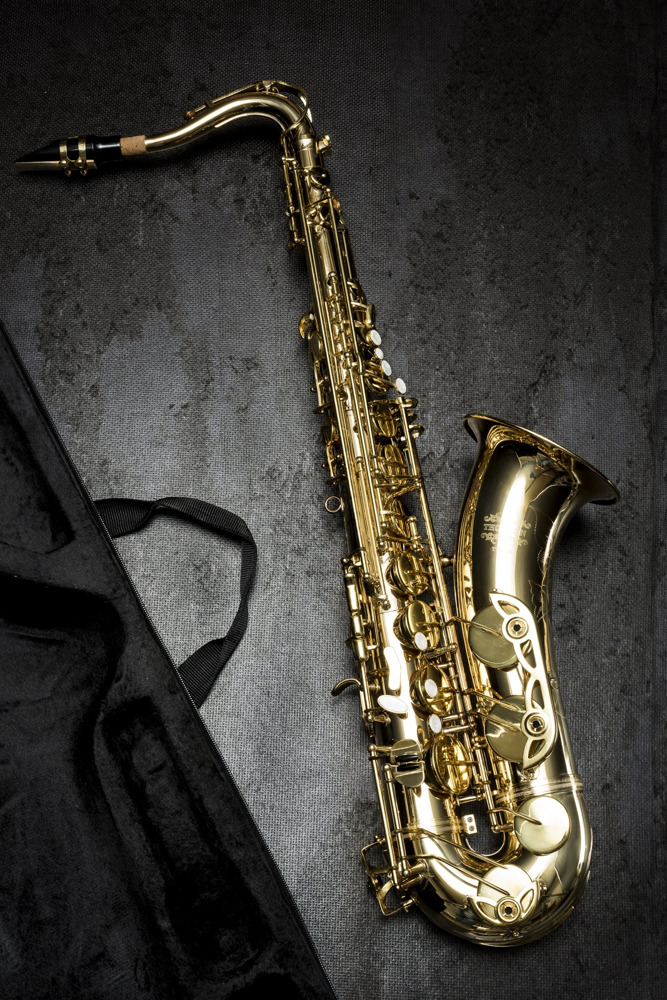
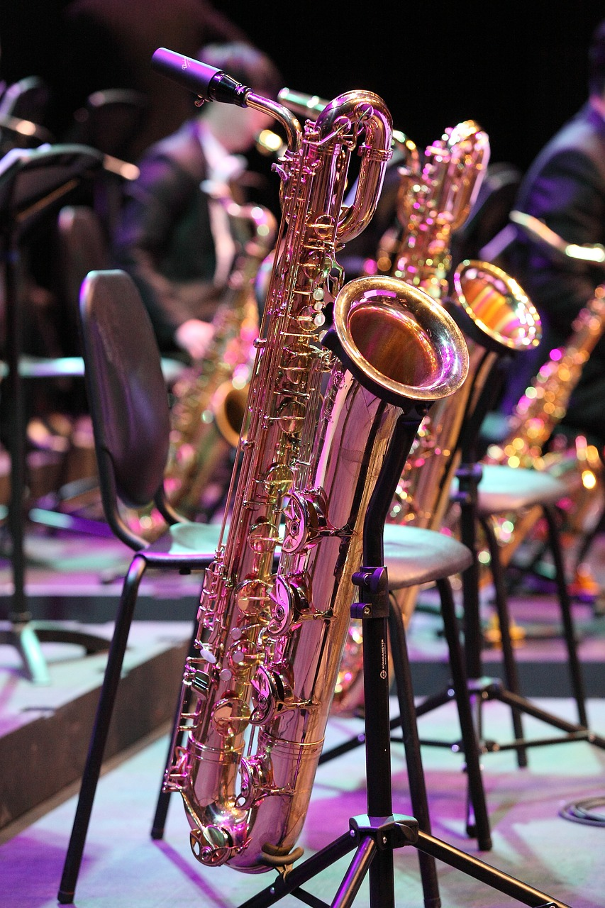
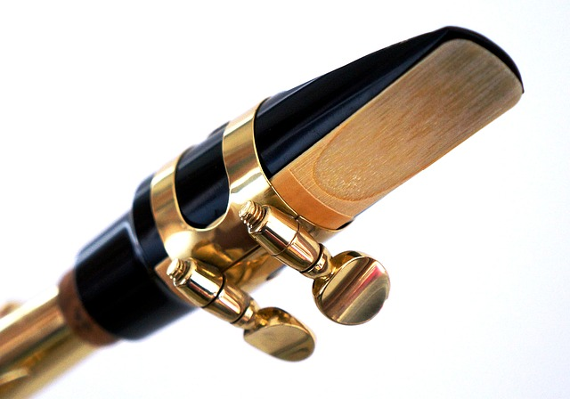

Saksofon skonstruowany został przez Adolpha Saxa w pierwszej połowie XIX wieku.
Jest instrumentem dętym drewnianym. Wiele osób mylnie sugeruje się jego metalowa budową,
chcąc go przyporządkować do grupy instrumentów blaszanych. Jednak sposób wydobywania dźwięku przy pomocy
drewnianego stroika nakazuje zaliczyc go właśnie do instrumentów drewnianych.
Strojem saksofonu, w zależności od jego rodzaju, jest strój B lub Es.
Saksofon sopranowySaksofon sopranowy jest gabarytowo najmniejszym spośród saksofonów.
Charakteryzuje się delikatną i ciepłą barwą brzmienia. Jego strój to Eb
Saksofon sopranowy występuje w dwóch postaciach - prosta budowa, przypominająca klarnet oraz
budowa zakrzywiona, podobna do saksofonu altowego, lecz zdecydowanie mniejszych wymiarów niż saksofon altowy.
Saksofon altowy

Saksofon altowySaksofon altowy jest najpopularniejszym rodzajem saksofonu. Ma około 72 cm wysokości i ma zawsze
zakrzywioną budowę. Najczęściej od tego typu saksofonu zaczyna się naukę gry.
Saksofon altowy posiada strój Eb.
Saksofon tenorowy

Saksofon tenorowySaksofon tenorowy jest większy gabarytowo od saksofonu altowego. Posiada również
nizszą barwę dźwięku. To co moze wizualnie odróżniać saksofon tenorowy od altowego jest jego szyjka,
zakrzywiona ku dołowi.
Saksofon tenorowy jest w stroju B.
Saksofon barytonowy

Saksofon barytonowySaksofon barytonowy jest gabarytowo największym spośród saksofonów. Ma około 108cm wysokości
oraz okolo 6.5kg wagi. W związku z tym, podczas grania na nim powinno uzywać się specjalnych szelek.
Jego wygląd wróżnia zawinięcie u góry kanału instrumentu.
Saksofon barytonowy ma najniższą barwę dźwięku. Posiada strój Es.
Ustniki do saksofonu

Ustnik do saksofonuUstnik jest bardzo ważną częścią saksofonu. Ma bardzo duży wpływ na barwę brzmienia saksofonisty.
Ustniki saksofonowe przeważnie wykonane są z metalu lub z tworzyw sztucznych. Ustnik z tworzywa sztucznego posiada przeważnie łagodniejszą barwę
natomiast ustnik metalowy charakteryzuje się ostrzejszym brzmieniem i jest kojarzony głównie z
muzyką jazzową. Należy pamiętać, że to jak dany saksofonista brzmi na saksofonie zależy w glównej mierze od jego aparatu zadęcia, a sam
ustnik dodaje tylko detali, ułatwiając uzyskanie pożądanej barwy. Sam ustnik nie dokona cudu, jeśli saksofonista nie ma wyćwiczonego odpowiedniego
zadęcia.
{kind=link}